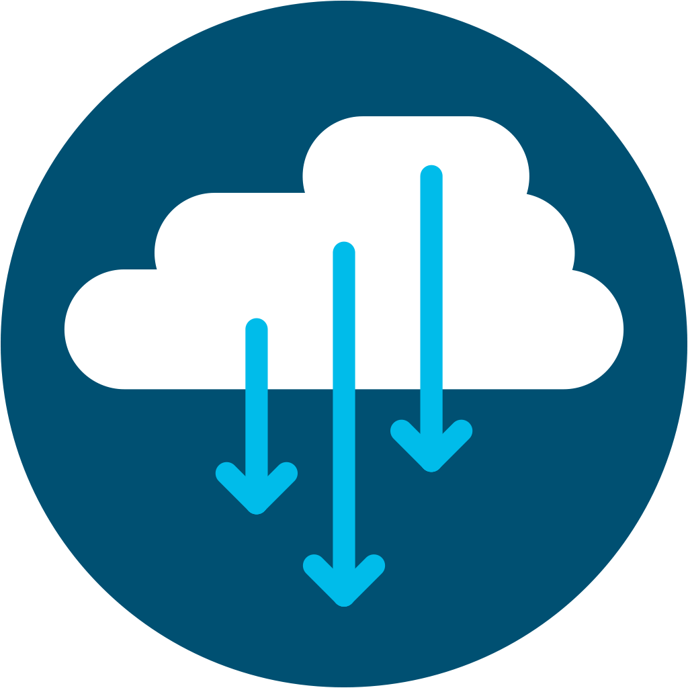
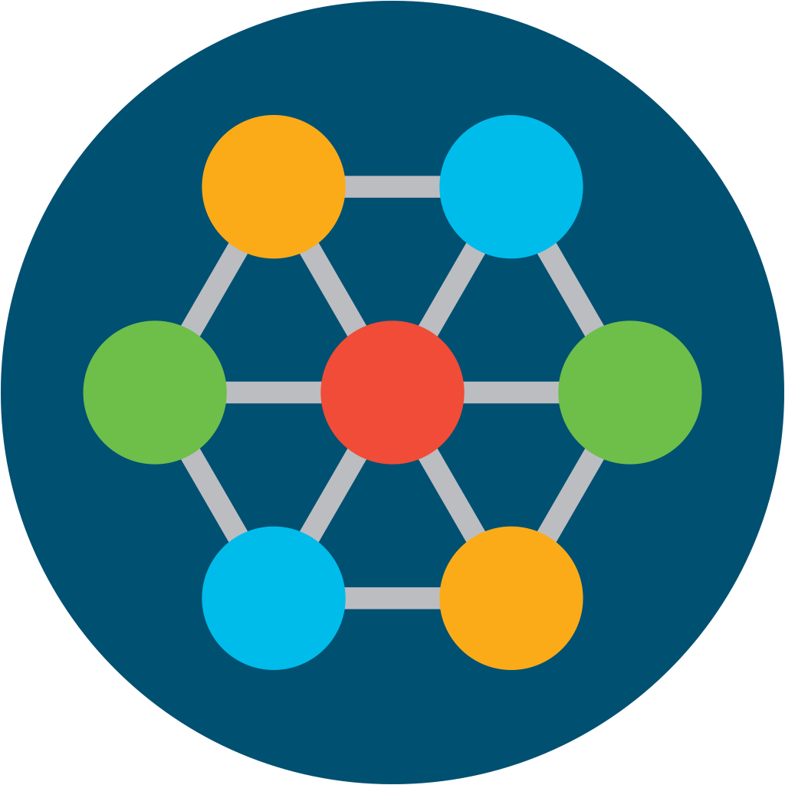

Innovation Edge is on a mission
leading the transition from hardware to software
Innovation Edge is on a mission
leading the transition from hardware to software
- Feature 1
 Feature 2
Feature 2- Feature 1
- Feature 1
- Feature 1
- Feature 1
- Feature 1
- Feature 1
Developing on Cisco's Portfolio
Cisco is everywhere. From its foundation in networking hardware to its advances in IoT, Cisco has an important role to play in industries ranging from domain security to energy management. Thus, we have a diverse portfolio of powerful technology that can be leveraged in various powerful ways. We aim to expose the capabilities of these technologies in order to understand two key concepts: what innovation is possible with Cisco technology today, and what innovation is needed for the future.
Co-Development with Industry Leaders
Web customers are disruptive. With a universal commitment to definitive, scalable software, these industry leaders are constantly creating some of the most powerful technologies available in the market. Our goal is to work with these thought-leaders to integrate the power of the network (and other Cisco foundations) in order to further enable and inspire innovation.
Open-Source Commitment
The Open-Source Community is powerful. From Linux to Apache, industry-defining technologies have been co-developed and provided to users with the goal of simplifying our standards and advancing our missions. Open-source provides a collaborative, unique setting for development, and gives us flexibility and manageability. We aim to contribute to the open-source community so others may leverage Cisco's portfolio and more to accomplish their goals.